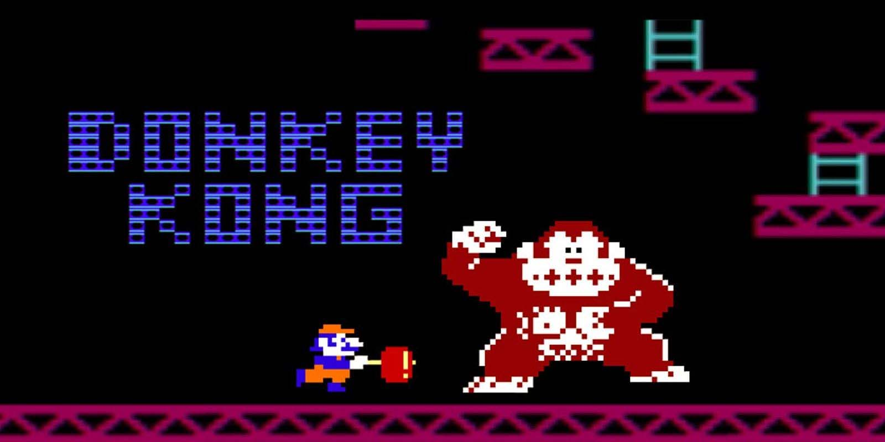

Sejarah Video Game, Dari Masa Ke Masa
Pontianak, 1 Agustus 2022 - 13.46
oleh Irfanda Anugerah (VANZGADGET.COM)
Kenapa ya di sekolah, kita tak pernah diajari tentang sejarah video game? Padahal di zaman sekarang, hal yang selalu mendampingi kita adalah video game. Buktinya ke mana pun kamu pergi dengan membawa sebuah smartphone, di dalamnya pasti terdapat game yang kamu senangi.
Jika kamu menulusurinya hingga ke titik paling awal, sejarah tentang video game ternyata tak terlalu panjang. Setidaknya sekarang dunia game masih memasuki dekade ke-5-nya dan masih banyak sisi-sisi dunia game yang belum terjamah, seperti virtual reality. Yuk, kita lihat bagaimana video game bermula di dunia ini!
1. 1970-1975
Sejarah Video Game: 10 Tahap Perkembangan dari Era Awal hingga Terkinitechcrunch.com Pada 1972, arcade game pertama di dunia dirilis pertama kali, yaitu Pong. Game tersebut menjadi legenda, membuat anak-anak kala itu mendatangi restoran dan toko-toko hanya untuk bermain.
Di tahun itu pula, satu bulan sebelumnya, konsol game pertama juga telah dibuat. Bernama Magnavox Odyssey, konsol ini dikisahkan sebagai konsol yang pertama kali bekerja sama dengan Nintendo untuk mengembangkan teknologi game lain.
2. 1976-1980
Atari 2600 muncul ke masyarakat dan memberikan dampak yang signifikan terhadap dunia game saat itu. Hingga di non-produksi lagi konsol tersebut terjual hingga 27.640.000 berkat hadirnya game bernama Asteroids di 1979. Satu tahun sebelumnya Space Invaders juga mengejutkan dengan mengejar pasar arcade game.
3. 1981-1985
Banyak game legenda diperkenalkan pada dekade ini. Mulai dari Pac-man hingga Mario. Untuk Mario sendiri, dia muncul ke permukaan tidak melalui judul gamenya sendiri, melainkan lewat game Donkey Kong di 1981. Di 1985, Nintendo juga mencetak sejarah dengan merilis konsol game pertamanya, Nintendo Entertainment System, yang mampu terjual di pasar hingga 60 juta unit.
4. 1986-1990
Persaingan dunia game semakin ketat. Banyak perusahaan baru yang sangat menjanjikan dalam menggarap konsol game, seperti SEGA yang merilis SEGA Genesis dengan dibarengi karakter ikoniknya, Sonic si landak. Pada era yang sama, game PC juga mulai berkembang.
Banyak permainannya yang sangat modern datang dengan konsep-konsep baru. John Madden’s Football adalah salah satu game legenda yang datang dari PC. Di era ini, game handheld pertama juga hadir bernama Gameboy pada 1989 yang terjual hingga 118 juta unit.
5. 1991-1995
Nintendo mencoba kembali peruntungannya dengan menghadirkan Super Nintendo (SNES). Walaupun tak sesukses Gameboy, tetapi Nintendo cukup meraup keuntungan yang besar. Pada era ini, salah satu game kontroversial muncul di mesin arcade bernama Mortal Kombat.
Game ini berusaha menyaingi ketenaran Street Fighter II yang berasal dari Jepang. Pada 1995, melihat pasar game yang terus berkembang, Sony pun mengeluarkan konsol gamenya PlayStation yang di mana pada era itu menjadi konsol terfavorit orang-orang.
6. 1996-2000
Tak butuh waktu lama bagi Nintendo untuk mengeluarkan konsol terbarunya. Dengan nama Nintendo 64, mesin ini menjadi saingan PlayStation kala itu, diikuti dengan hadirnya SEGA Saturn.
Era ini juga mengawali game interaktif macam Dance Dance Revolution yang membuat pemain tak hanya menatap layar, tetapi juga bergoyang. Game online juga mulai diperkenalkan pada era yang sama.
7. 2001-2005
Dengan masuknya PlayStation 2 ke pasar, Sony mencapai masa kejayaannya. Konsol tersebut terjual hingga di angka 150 juta kopi dan hingga sekarang rekor tersebut belum ada yang bisa memecahkannya. Akan tetapi, Nintendo tetap terus berinovasi.
Dengan memperkenalkan GameCube, Nintendo DS serta Gameboy Advance, Nintendo membuktikan dirinya sebagai perusahaan yang paling aktif dalam mengembangkan game. Era ini juga memperkenalkan dua hal baru. Yang pertama adalah kehadiran Steam dan yang kedua adalah Xbox, konsol yang diproduksi oleh Microsoft.
8. 2006-2010
Sony memperkenalkan konsol game terbarunya PlayStation 3. Konsol tersebut mengawali konsol game generasi ke-7 dengan kelebihannya yang memegang hak eksklusif untuk teknologi blu-ray.
Akan tetapi, pada era ini orang-orang lebih menggandrungi game interaktif. Hadirnya Wii dan game bernama Rock Band membuat orang-orang menginginkan kegiatan yang lebih aktif. Minecraft hadir di 2010 dan membuat viral dunia internet.
9. 2011-2015
Ke-hype-an dunia game seakan menurun. Konsol-konsol game tidak menemukan hal yang inovatif. Hanya pengembangan grafis saja yang tampak berbeda.
Terbukti dengan penjualan game yang tak terlalu fantastis jika dibandingkan dengan konsol-konsol sebelumnya. Nintendo 3DS mencapai 50 juta unit, Wii U bahkan tidak sampai 15 juta unit, serta Xbox One dan PlayStation 4 yang jika angka penjualannya digabung tidak mencapai 100 juta unit.
10. 2016-2020
Nintendo mengembalikan masa kejayaannya. Dengan memperkenalkan Nintendo Switch, Nintendo masih membuktikan dirinya sebagai perusahaan game yang paling inovatif dengan menghadirkan konsol rumahan yang tidak rumahan karena dapat dibawa dan dimainkan di mana-mana. Diperkirakan game yang akan berkembang di era ini adalah mobile game.

Tentang Penulis
Irfanda Anugerah adalah seorang Mahasiswa semester 4 di salah satu Politeknik Negeri yang ada di kalimantan. Dia sangat menyukai hal berbau Anime dan juga memiliki Sense Design yang lumayan bagus. Berbekal skill Corel Draw & Photoshop yang sangat membantu dia dalam membuat Web ini.
Share our website


Introduction

Vanz Gadget adalah situs web artikel bertema gadget. Dibuat pada tanggal 30 Mei 2022 oleh Irfanda Anugerah..
Artikel Populer


Artikel Lainnya
5 Smartphone dengan Fast Charging Tercepat Saat Ini